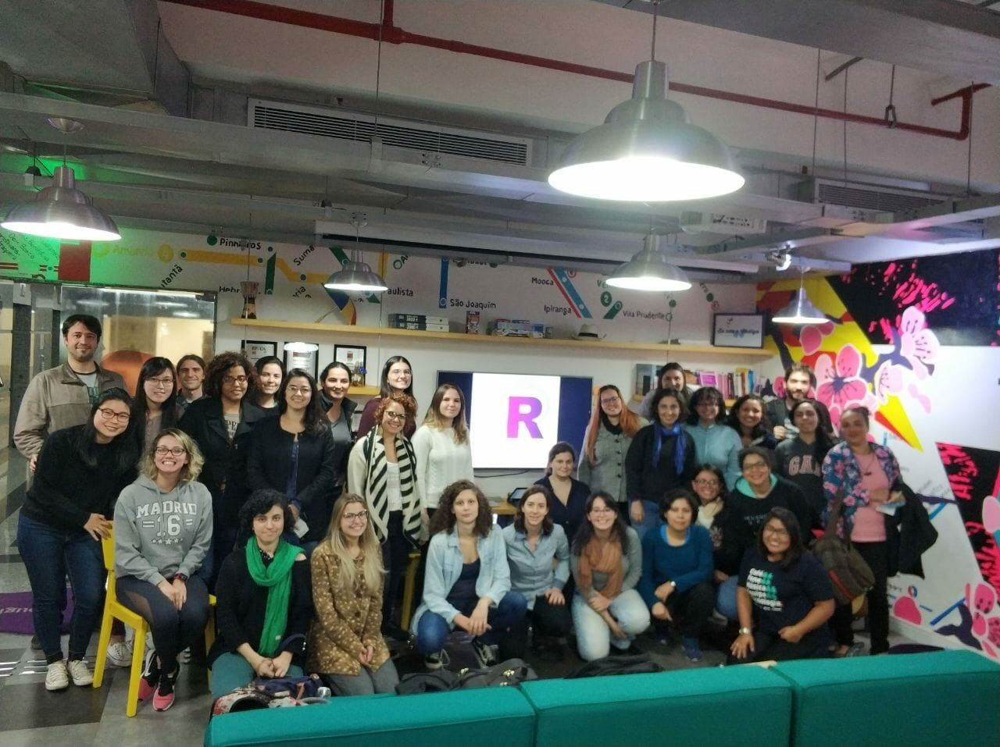

Bea Milz
Beatriz Milz
Posts
All posts
English
Português
Español
Series
GitHub Actions
Talks
All/Todas
English
Português
Español
Resume
Categories
API
Automations
Azure
Blog
Communities
Community
Data cleaning
Data import
Datasets
Debug
Events
Excel
Git
GitHub
GitHub Actions
Google
Google Sheets
Maps
Microsoft
Microsoft365R
One Drive
Pipe
Posit
Quarto
R
R Packages
R-Ladies
RMarkdown
RStudio
Reproducibility
Research
Shiny
Studying
Tables
Teaching
The Carpentries
Tips
Translation
Tutorial
Web Scraping
ggplot2
httr
purrr
rvest
tidyverse
Posts
Order By
Default
Title
Date - Oldest
Date - Newest
Como usar senhas sem escreve-las nos scripts
Usando senhas, tokens e keys no código em R de forma segura.
Sep 13, 2022
Impressões pessoais da rstudio::conf(2022)
Nesse post, apresentamos nossas impressões pessoais sobre o evento que aconteceu em Washington DC!
Aug 12, 2022
How important is GitHub Actions to RStudio/Posit?
Code for a plot in my talk at rstudio::conf 2022!
Jul 28, 2022
Monitoring quarto-dev repositories: Creating a workflow with GitHub Actions for R users
GitHub Actions Series 2 - In this post, I will show how you can create a workflow to monitor repositories from the quarto-dev organization on GitHub!
Jul 10, 2022
Tidyverse developer day 2019 (tidy-dev-day)
The experience of participating in the Tidyverse Developer Day 2019.
Jul 8, 2022
Introduction to GitHub Actions to R users
GitHub Actions Series 1 - In this post, I will briefly introduce GitHub Actions and show how you can start using GitHub Actions with R.
Jun 30, 2022
Introducción a GitHub Actions para usuarias de R
Serie GitHub Actions - 1 - En esta publicación, presentaré brevemente GitHub Actions y le mostraré cómo puede comenzar a usar GitHub Actions con R.
Jun 30, 2022
Introdução ao GitHub Actions para quem programa em R
Série GitHub Actions - 1 - Neste post, apresentarei brevemente o GitHub Actions e mostrarei como você pode começar a usar o GitHub Actions com R.
Jun 30, 2022
Bases de dados: para praticar e ensinar
Quer saber como acessar várias bases de dados com R? Imagem: por Allison Horst.
Jun 11, 2022
RStudio Instructor Training and Certification
This post describes how I studied and did the RStudio Instructor Training and Certification.
Jun 8, 2022
Creating a blog with Quarto in 10 steps
In this post, I introduce you to my new blog and show how you can create a blog with Quarto for R users.
Jun 5, 2022
Pacote dados: bases em português para praticar e ensinar
Quer saber como acessar várias bases de dados em Português com R? Post publicado no blog da Curso-R.
Apr 6, 2022
Acessando dados do seu One Drive com R
Post publicado no blog da Curso-R.
Mar 18, 2022
Acessando dados do Google Sheets com R
Post publicado no blog da Curso-R.
Mar 8, 2022
Acessando APIs com R: GitHub - Parte 1
Segundo post sobre acesso à APIs.
Feb 19, 2022
Acessando APIs com R: Exemplos com a PokéAPI!
Primeiro post sobre acesso à APIs usando R.
Nov 29, 2021
Pixar: Uma História de dados
Post publicado no blog da
Escola de Dados
Jul 3, 2021
Buscando informações na Wikipédia: Lista de episódios de Naruto Shippuden
Post publicado no blog da Curso-R.
May 24, 2021
Experimentando o R 4.1.0
Primeiras impressões ao usar o nova versão do R
May 18, 2021
Desvendando erros: Entendendo mensagens de erro comuns em R
Post publicado no blog da Curso-R. Esse post tem como objetivo listar alguns erros comuns quando programamos em R, e dicas de como resolvê-los!
Mar 29, 2021
Dicas para elaborar relatórios em R
No blog da Curso-R, colaborei com três posts que apresentam dicas para fazer tabelas, gráficos e relatórios em R. Neste post, comentamos algumas dicas sobre elaboração de relatórios em R.
Mar 15, 2021
Conhecendo o pacote bibliometrix
Primeiras impressões utilizando o pacote
{bibliometrix}
Mar 7, 2021
Treinamento de instrutora e certificação da RStudio
Este post relata como foi o processo pra mim de realizar a certificação da RStudio: RStudio Instructor Training and Certification.
Mar 2, 2021
Dicas para elaborar gráficos em R
No blog da Curso-R, colaborei com três posts que apresentam dicas para fazer tabelas, gráficos e relatórios em R. Neste post, comentamos algumas dicas sobre elaboração de gráficos em relatórios.
Dec 17, 2020
Dicas para elaborar tabelas em R
No blog da Curso-R, colaborei com três posts que apresentam dicas para fazer tabelas, gráficos e relatórios em R. Neste post, comentamos algumas dicas sobre elaboração de tabelas em relatórios.
Dec 3, 2020
Criando mapas com os pacotes tidyverse e geobr
Utilizando dados sobre coleta e tratamento de esgoto no Estado De São Paulo
Jul 27, 2020
The Carpentries: Como fazer o treinamento de instrutora?
Feb 22, 2020
Um ano aprendendo R!
Um relato deste um ano aprendendo R!
Aug 31, 2019
Desenvolvendo meu primeiro Shiny App
O objetivo deste post é compartilhar um pouco sobre a minha experiência no desenvolvimento do meu primeiro Shiny App.
Aug 21, 2019
Tidyverse developer day 2019 (tidy-dev-day)
Este post tem como objetivo relatar a experiência de participar do Tidyverse Developer Day 2019.
Aug 12, 2019
Compartilhando conteúdo
Como compartilhar conteúdo sobre R, utilizando R?
Jun 24, 2019

Meio ano de aprendizagem de R!
Neste texto, gostaria de compartilhar um pouco sobre os primeiros seis meses de aprendizagem em programação, principalmente na linguagem R.
Jan 29, 2019
No matching items